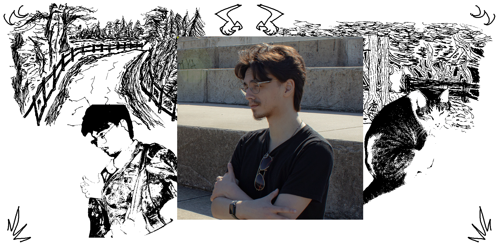

<!DOCTYPE html>
<html>
<head>
<meta name="viewport" content="width=device-width, initial-scale=1.0"> 
    <title>ABOUT</title>
    <link rel="icon" type="image/x-icon" href="media/favicon.png">
<style>
@font-face {
  font-family: Neue Haas;
  src: url(fonts/NeueHaasDisplayRoman.ttf);
}

@font-face {
    font-family: Neue Haas;
    src: url(fonts/NeueHaasDisplayBold.ttf);
    font-weight: bold;
}

* {
  font-family: Neue Haas;
  box-sizing: border-box;
}

div.gallery {
  margin-right: 10px;
  margin-bottom: 30px;
  border: 1px solid #ccc;
  float: left;
  width: 300px;
}

div.gallery:hover {
  border: 1px solid #777;
}

div.gallery img {
  width: 100%;
  height: auto;
}

div.desc {
  padding: 5px;
  text-align: center;
}

a:link {
  color: rgb(255, 0, 0);
  background-color: transparent;
  text-decoration: none;
}
a:visited {
  color: rgb(201, 0, 0);
  background-color: transparent;
  text-decoration: none;
}
a:hover {
  color: rgb(255, 124, 124);
  background-color: transparent;
  text-decoration: underline;
}
a:active {
  color: rgb(29, 0, 0);
  background-color: transparent;
  text-decoration: underline;
}

body {
    background-image: url('');
  font-family: Neue Haas;
  font-size: 20px;
  padding: 0px;
  background: #ffffff;
}

.center {
  display: block;
  margin-left: auto;
  margin-right: auto;
  width: 80%;
}

.column {
  float: left;
  width: 33.33%;
  padding: 5px;
}

.container {
  position: relative;
  width: 300px;
}

.container:hover .overlay {
  opacity: .75;
}

.header {
  padding: 10px;
  text-align: center;
  background: #f8f8f8;
  background-image: url('media/headerbg.png');
}

.header h1 {
  font-size: 0px;
  text-align: center;
}

.image {
  display: block;
  width: 300px;
  height: auto;
}

.overlay {
  position: absolute;
  top: 0;
  bottom: 0;
  left: 0;
  right: 0;
  height: 300px;
  width: 300px;
  opacity: 0;
  transition: .5s ease;
  background-color: #008CBA;
}

.text {
  color: white;
  font-size: 20px;
  position: absolute;
  top: 50%;
  left: 50%;
  -webkit-transform: translate(-50%, -50%);
  -ms-transform: translate(-50%, -50%);
  transform: translate(-50%, -50%);
  text-align: center;
}

.topnav {
  overflow: hidden;
  background-color: #000000;
}

.topnav a {
  list-style-type: none;
  float: left;
  display: block;
  color: #f2f2f2;
  text-align: center;
  padding: 14px 40px;
  text-decoration: none;
}

.topnav a:hover {
  background-color: #ff0000;
  color: black;
}

.leftcolumn {   
  float: left;
  width: 75%;
}

.rightcolumn {
  float: left;
  width: 25%;
  background-color: #f1f1f1;
  padding-left: 10px;
}

.fakeimg {
  background-color: #aaa;
  width: 100%;
  padding: 20px;
}

.card {
  background-color: white;
  padding: 20px;
  margin-top: 5px;
}

.row::after {
  content: "";
  display: table;
  clear: both;
}

.footer {
  padding: 20px;
  text-align: center;
  background: #000000;
  margin-top: 20px;
}

@media screen and (max-width: 506px) {
  .leftcolumn, .rightcolumn {   
    width: 100%;
    padding: 0;
  }
}

@media screen and (max-width: 506px) {
  .topnav a {
    float: none;
    width: 100%;
  }
}
</style>
</html>
<body>

<div class="header">
<h1></h1>
</div>

<div class="topnav">
  <a href="index.html">home </a>
  <a href="work.html">work </a>
  <a href="about.html">about </a>
</div>

<div class="leftcolumn">
  <div class="card">
    <h1>23 Years Ago One Day...</h1>
    <p>
    <b>It Was Me</b>
    <br>
    </img>
    Jacob Hernandez is a filmmaker, video editor, and multimedia artist.
    <br>
    <br>
    He was born on a sweltering September day in Fresno, California. A few years later, he was raised in Michigan, where he picked up a camera for the first time and pointed it at himself and his family's TV to see the videos he could create. Now he lives in Chicago with his cat, Bolt. There, he continues to write his stories.
    <br>  
    <br>
    Previously, he studied film at Columbia College Chicago with a focus on post-production, specifically video editing. In and out of the classroom, he has developed an affinity for more within and outside the realm of film. Those skills include graphic design, illustration, 3D modeling, and photography.
    <br>
    <br>
    Using the skills he has cultivated throughout his career, he seeks to hone them in the film industry. Through the stories he has seen on screens and the meticulous organization he has done with gigabytes of video files from middle school to the present, he has found purpose in video editing. Through the chaos of a shoot or the scattered renders of an animation, he loves that he's able to make something engaging in post.
    <br>
    <br>
    Through the development of these talents, he seeks to make a difference on and off the screen. Shining a light on the struggles of the many and the struggles of a few. He hopes to make as many feel seen in the same way he has in his favorite films.
    <br>
    <br>
    His love for film and video has been crucial to his upbringing. Jacob goes to the movies as often as he can. He finds most of himself in films from the past. There, he also finds the most inspiration. Some of his favorites include the funny, yet heartbreaking <u><i>Nights of Cabiria</i> (1957, dir. Federico Fellini)</u>. The dreamy, yet vivid <u><i>Cleo from 5 to 7</i> (1962, dir. Agnes Varda)</u>. And the explosive, yet woeful <u><i>Who's Afraid of Virginia Woolf?</i> (1966, dir. Mike Nichols)</u>
    <br>
    <br>
    (He also write his thoughts about movies <a href="https://letterboxd.com/jambajabuc/" target="_blank">here</a>)
    </p>
  </div>
</div>

<div class="rightcolumn">
  <div class="card">
    <h1>My Reel</h1>
    Alternatively, you can <b>click</b> on the QR code to visit.
    <br>
    <a href="oops.html" target="_blank"></a>
    I also love music. Every month I curate my own playlists with the songs I've been listening to. Below, is the most <b>recent</b> one, and you can find the rest in the links as well.
    <br>
  <iframe data-testid="embed-iframe" style="border-radius:12px; margin-top: 10px; margin-bottom: 10px;" src="https://open.spotify.com/embed/playlist/5oitEluSzqKoy8WvaRKnQc?utm_source=generator&theme=0" width="100%" height="152" frameBorder="0" allowfullscreen="" allow="autoplay; clipboard-write; encrypted-media; fullscreen; picture-in-picture" loading="lazy"></iframe>
  <a href="https://open.spotify.com/playlist/5F3OmcZIeW6xy16wtTehjv?si=8381d079597b49b1" target="_blank" style="float: left;">august 2025</a><br>
  <br>
  <a href="https://open.spotify.com/playlist/4iHpv8BrmXuC3qCwbvFrxn?si=bc249012c9134f11" target="_blank" style="float: right;">july 2025</a><br>
  <a href="https://open.spotify.com/playlist/1VBHvbHngHnm9bTZSfCZHh?si=f0f9a1bd8630471e" target="_blank" style="float: left;">june 2025</a><br>
  <a href="https://open.spotify.com/playlist/436QsCCl6KKoiHlAJpM6yi?si=d8e3d56cfe754faf" target="_blank" style="float: right;">may 2025</a><br>
  <a href="https://open.spotify.com/playlist/1OEXumJR4TvFKeAQRqBLFT?si=5699f7f2333f427e" target="_blank" style="float: left;">april 2025</a><br>
  <a href="https://open.spotify.com/playlist/6nVcQ3jF51NWzeEeBSn8aY?si=ded9a5327f234270" target="_blank" style="float: right;">march 2025</a><br>
  <a href="https://open.spotify.com/playlist/2CKrqsiMInsElHhhkNwDyt?si=9075321605714f21" target="_blank" style="float: left;">february 2025</a><br>
  <a href="https://open.spotify.com/playlist/0SCjFNqIUhMV0QGMWf57AS?si=9d7a142862a747f0" target="_blank" style="float: right;">january 2025</a><br>
  </div>
</div>

<div class="row"></div>

<div class="footer">
  <a href="mailto:jacobthehernandez@gmail.com"></a>  <a href="https://www.youtube.com/@jambajabuc" target="_blank"></a>  <a href="https://www.instagram.com/jambajabuc/" target="_blank"></a>  <a href="https://www.linkedin.com/in/jacobhern/" target="_blank">
</div>

</body>